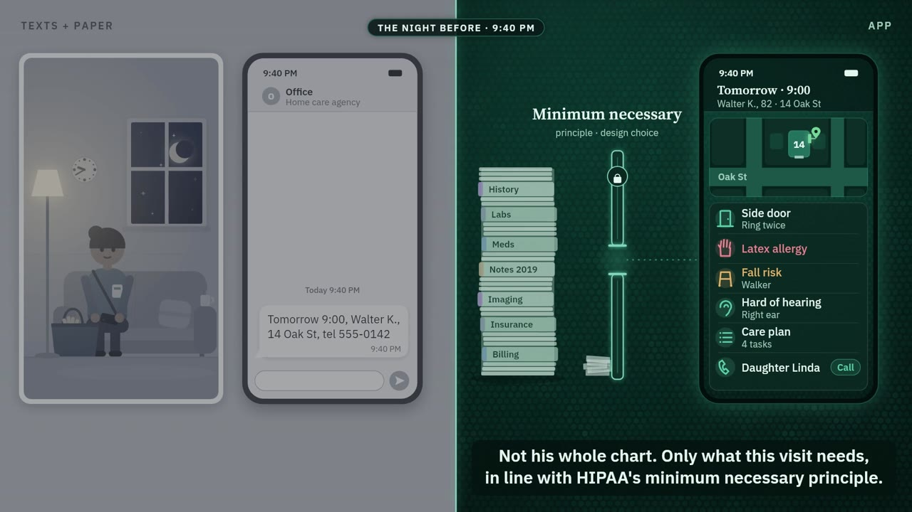

Andrii Yevenko · emergency physician · 7 years as a physician analyst in US healthtech · LinkedIn · GitHub

First Visit
Business analysis demo (about 3 min, three versions): one homecare visit shown twice, then its state machine, transition matrix and a pre-fill trade-off.